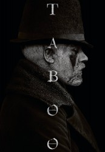

")
 
 IMDB-Wertung: 8.5 / 10
IMDB-Wertung: 8.5 / 10  Metascore:
Metascore: 
London 1814: James Keziah Delaney kehrt nach einem 10-jährigen Aufenthalt in Afrika nach London zurück. Dort will er das Erbe seines Vaters antreten, allerdings wird er selbst längst für tot gehalten und um das Erbe wird erbittert gekämpft. Zudem ranken sich jede Menge Mythen um seine Rückkehr und so muss er sich scheinbar übermächtigen Gegnern stellen, um seinen eigenen Kopf zu retten ...
Jahr: 2017
Dauer: 55 Minuten
FSK:
Land: England Studio: BBC OneTonspuren: DD5.1 - ,
Untertitel:
Auflösung: 720p (1280x720) Größe: 1361 MB
Regisseur: Anders Engström, Kristoffer Nyholm
Drehbuch: Sayed Kashua
Soundtrack:
Darsteller:
 Tom Hardy als James Keziah Delaney
Tom Hardy als James Keziah Delaney David Hayman als Brace
David Hayman als Brace Jonathan Pryce als Sir Stuart Strange
Jonathan Pryce als Sir Stuart Strange Oona Chaplin als Zilpha Geary
Oona Chaplin als Zilpha Geary Leo Bill als Benjamin Wilton
Leo Bill als Benjamin Wilton Edward Hogg als Godfrey
Edward Hogg als Godfrey Stephen Graham als Atticus
Stephen Graham als Atticus Franka Potente als Helga
Franka Potente als Helga Michael Kelly als Dumbarton
Michael Kelly als Dumbarton Jason Watkins als Solomon Coop
Jason Watkins als Solomon Coop Tom Hollander als Cholmondeley
Tom Hollander als Cholmondeley Nicholas Woodeson als Robert Thoyt
Nicholas Woodeson als Robert Thoyt Mark Gatiss als Prince Regent
Mark Gatiss als Prince Regent Edward Fox als Horace Delaney
Edward Fox als Horace Delaney Christopher Fairbank als Ibbotson
Christopher Fairbank als Ibbotson Marina Hands als Countess Musgrove
Marina Hands als Countess Musgrove Daniel Tuite als Palace Servant
Daniel Tuite als Palace Servant Roger Ashton-Griffiths als Abraham Appleby
Roger Ashton-Griffiths als Abraham Appleby Jo Cameron Brown als Old Lady
Jo Cameron Brown als Old Lady Tim Plester als Passerby 1
Tim Plester als Passerby 1 Ben Moor als Thoyt's Assistant
Ben Moor als Thoyt's Assistant Elizabeth Conboy als Lady Littlewood
Elizabeth Conboy als Lady Littlewood Michael Shaeffer als Dr. Powell
Michael Shaeffer als Dr. PowellDatei: X:\HD-Serien\Taboo\Taboo S01E01.mkv seit 03.04.2017
Festplatte: HD Serien(SU-Z)+Dokus+Musik
 Es gibt insgesamt 182 Filme in der Gruppe 'HD-Serien'
Es gibt insgesamt 182 Filme in der Gruppe 'HD-Serien'